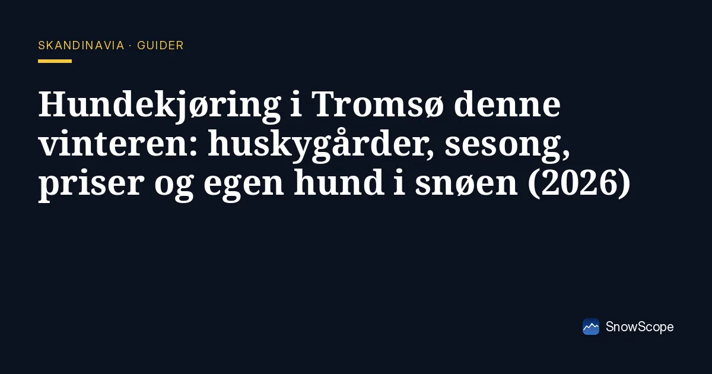

Hundekjøring i Tromsø denne vinteren: huskygårder, sesong, priser og egen hund i snøen (2026)
Hundekjøring på utkanten av Tromsø går fra midten av november gjennom våren, så lenge det ligger nok snø på bakken. 13. november var selve byen knapt hvit—bare 6 cm ved værstasjon—men fjellene var klare: Gjerdvassbu på 710 m hadde 44 cm, nok til at sledene skulle rulle.
Se snøprognosen for Scandinavia direkte i SnowScope-appenSnødybde, puddervarsler og 3D-kartet, gratis.

Hvor du kjører: gårder utenfor byen har mer snø
Det beste hundekjøringen skjer der snøen ligger dypere og fastere. De fleste operatører arbeider fra Kvaløya i vest eller i dalene innland, borte fra bypolitiet og urbant slaps.
Tromsø Villmarkssenter på Kvaløya kjører daglige sledturer fra 15. november til 30. april 2027. En tur varer om lag 45 minutter i en delt slede med guide, inngår i en fire timers tur med transport, for 3 390 NOK per voksen. Gården har over 300 alaskahuskyer og driver kafé. Best Arctic ved Breivikeidet tilbyr en morgentur på fem timer for 2 990 NOK. Active Tromsø også på Kvaløya kjører heldagsturer på om lag sju timer fra november til mars.
November til januar: mørket kommer før tinen
Solen går ned for sesongen sent i november og kommer ikke tilbake før midten av januar. Visit Tromsø markerer polarnatten som går grovt fra 27. november til 15. januar. Dette betyr ikke total mørke på dagtid: en blå skumring varer noen timer, og mange gårder kjører turer i den.
Book for tidlig november hvis du vil ha noe ordentlig dagslys. Etter månedslutt tar du med deg et pantelys, forventer dårlig lys, og planlegger turen rundt gårdens ruteplan. Mange hundekjøringsturer skjer i skumringen, som er en del av Arktis-opplevelsen.
Kle deg riktig til sledekjøring og vind
En bevegelig slede skaper vindkjøling som gjør selv mild minusgrad føles hard. Du står eller sitter stille, utsatt, så kle deg varmere enn du ville for aktiv bevegelse. Lag fungerer bedre enn en tykk frakk, og dekk ansiktet, hendene og føttene.
Gårdene vet dette og gir vanligvis råd om hva man skal ha på seg; spør når du bestiller. Ta med et pantelys selv på dagtider, fordi lyset forsvinner raskt og mange ruter går gjennom skog.
Lure din egen hund i vinter-Tromsø
Norges nasjonale båndtvang går fra 1. april til 20. august, men Tromsø setter sine egne hele-året-regler. Hunder må være bånd i bebygde områder, i sentrum, på idrettsplass og på lyslyste skiledere. Hele Tromsø—både fastlandet og Kvaløya—er reinsdyrbeiter hele året, og kommunen minner beboere om å holde hundens tett og bånd når reinsdyr kan være i nærheten.
Hvis hunden din trenger å løpe løs, bruk de gjerdede hundeparkene ved Kronen eller Charlottenlund. På grooming skiledere, gå ved siden av løpet, ikke i det, og plukk opp avfall. I dyp vinterkald bør kort hårede hunder ha en frakk.
Snødybde og hva det betyr for ferdsel
Tidlig november-snø i Tromsø er ordentlig men ikke dyp. De 44 cm i fjellene 13. november er nok til å gå på ski eller kjøre slede, men steiner kan fortsatt sitte nær overflaten på bratte bakker. Når vinteren avanserer og frisk snø bygges opp, blir basen hardere og dypere.
Sjekk med gården eller lederoperatøren om snødybde på din valgte rute før du går. Forskjellen mellom by og fjell er stor: lavt område har ofte mindre snø og mer slaps, mens høyere daler forblir kaldere og holder snø bedre.
Tips til skiløpere
- Velg tidlig november for hundekjøring hvis dagslys betyr noe for deg; etter 27. november er solen borte til midten av januar og alle turer skjer i skumring eller mørke.
- Kle deg varmere enn du tror du trenger; en bevegelig slede skaper vindkjøling som biter hardere enn å stå stille.
- Bestill med en gård på Kvaløya eller i dalene—de har mer snø og bedre forhold enn bygrunn.
- Bånd hunden din på lyslyste skiledere og i byen hele året, og hold den borte fra reinsdyr, som beiter på tvers av Tromsø hele vinteren.
- For turer utenfor skiledere, sjekk det siste offisielle snøskredvarselet fra Norges snøskredvarseltjeneste før du går.
Om tallene
Snødybdene for skistedene er det dypeste snødekket i de øvre bakkene på datoen som vises; de er anslag for et område, ikke en måling i ett punkt. Prognoser kan endre seg. Les alltid det offisielle snøskredvarselet før du kjører utenfor preparert løype.
Siter denne rapporten
For forskning, undervisning eller presse: tallene og diagrammene kan brukes fritt under CC BY 4.0 med denne kildehenvisningen.
SnowScope (2026), Hundekjøring i Tromsø denne vinteren: huskygårder, sesong, priser og egen hund i snøen (2026), https://snowscope.app/blog/nb/2026/11/tromso-dog-sledding-husky-farms-winter-guide-2026.html, hentet 2026-11-14
SnowScope (Atlas Labs). (2026, November 14). Hundekjøring i Tromsø denne vinteren: huskygårder, sesong, priser og egen hund i snøen (2026). SnowScope snow reports. https://snowscope.app/blog/nb/2026/11/tromso-dog-sledding-husky-farms-winter-guide-2026.html
BibTeX
@misc{snowscope2026tromsodogsleddinghuskyfa,
author = {{SnowScope (Atlas Labs)}},
title = {Hundekjøring i Tromsø denne vinteren: huskygårder, sesong, priser og egen hund i snøen (2026)},
year = {2026},
month = nov,
howpublished = {\url{https://snowscope.app/blog/nb/2026/11/tromso-dog-sledding-husky-farms-winter-guide-2026.html}},
note = {Published 2026-11-14 14:19 UTC; accessed 2026-11-14}
}· CC BY 4.0 · Metoder, data og verktøy →
Følg Scandinavia
Gratis: en melding når nysnø er på vei, og prognosen hver morgen.